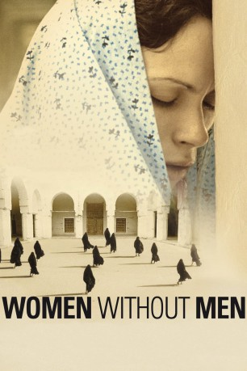

#8996 Women Without Men
 
 IMDB-Wertung: 6.3 / 10
IMDB-Wertung: 6.3 / 10  Metascore: 0
Metascore: 0 
Ein Putsch in Teheran bringt zufällig vier unterschiedliche Frauen an einem Ort der Ruhe zusammen. Fakhri ist mit einem hohen Soldaten verheiratet und will ihn für ihre Jugendliebe verlassen. Die Prostituierte Zarin verfällt dem Ekel über sich und ihren Job immer mehr und beschließt zu fliehen. Politikerin Muris wird aus gesellschaftlichen Konventionen gezwungen sich dem Familienleben hinzugeben. Ihre Freundin Faezeh hält sich aus alle dem raus, möchte aber ihren Bruder heiraten. Alle vier beschließen, auf einer Plantage außerhalb des Troubels ein Leben ohne Männer zu beginnen.
Jahr: 2009
Dauer: 100 Minuten
FSK: 12
Land: Deutschland Studio: NFP Marketing & DistributionTonspuren:
Untertitel:
Auflösung: 1080p (1920x816) Größe: 5150 MB
Genre: Drama
Regisseur: Shirin Neshat, Shoja Azari
Drehbuch: Shoja Azari
Soundtrack: Ryuichi Sakamoto
Darsteller:
 Pegah Ferydoni als Faezeh
Pegah Ferydoni als Faezeh- Orsolya Tóth als Zarin
- Navid Navid als Ali
 Bijan Daneshmand als Abbas
Bijan Daneshmand als Abbas- Essa Zahir als Amir Khan
- Farhad Payar als Leading Officer
- Aziz Hattab als Comrade
- Shabnam Toloui als Munis
- Arita Shahrzad als Farrokhlagha
- Ahmad Hamed als Gardener
- Tahmoures Tehrani als General Sadri
- Abbas Bakhtiari als Singer
- Mehdi Moinzadeh als Communist Leader
- Shahrnoush Parsipour als Madame Pari
- Said Oveissi als Hassan
- Mithra Zahedi als Nahid
- Mina Azarian als Zinat
- Shahbaz Noshir als Arash
- Nader Farman als Babak
- Youssef Nabil als Youssef
- Natasha Chudyk als Christine
- Soussan Azarin als Grandmother
- Fadma Hammou Maadini als Alieh
- Fouad Saad Allah als Taxi Driver
- Khalid Elwadi als Activist
- Mohammed Alaoui als Rapist
- Salma Daneshmand als Guest
- Rahi Daneshmand als Soldier
Datei: X:\2009(N-Z)\Women Without Men (2009, FSK12, 1920x816).mkv seit 16.05.2018
Festplatte: HD 2009(G-Z)-2010(A-F)
 Es gibt insgesamt 99 Filme in der Gruppe '2009(N-Z)'
Es gibt insgesamt 99 Filme in der Gruppe '2009(N-Z)'